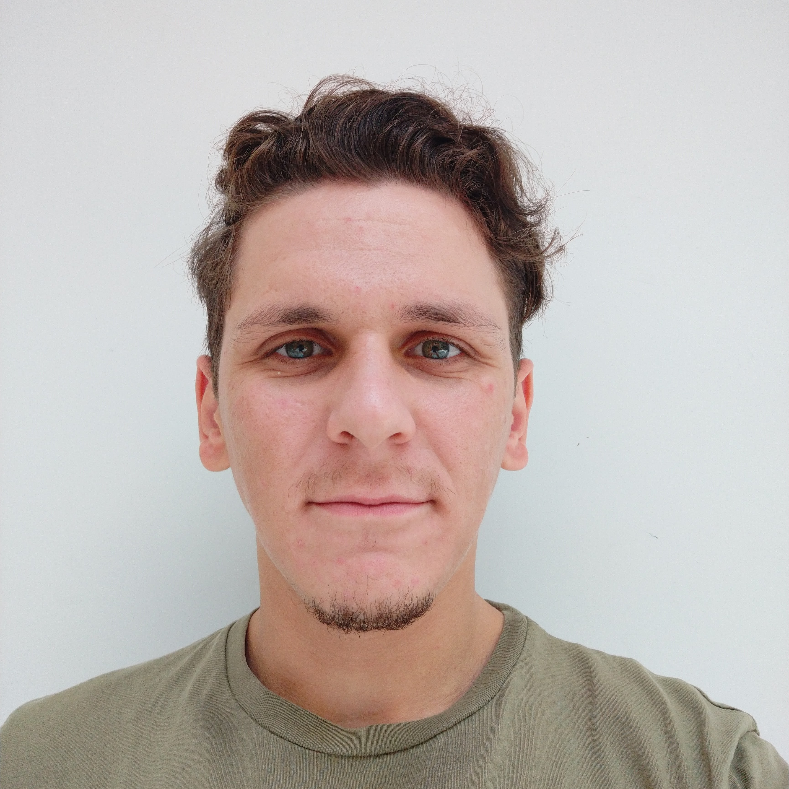

|
Burhan Karahasan Revolutionizing healthcare through innovative robotics and electronics. Burhan Karahasan is a graduate researcher at Koç University, dedicated to enhancing quality of life through medical microrobotics. With dual bachelor's degrees in Mechanical and Electrical & Electronics Engineering (Summa Cum Laude, 3.95 CGPA, 2018–2024), he is pursuing an MSc in Mechanical Engineering, aiming for a PhD to drive breakthroughs in robotic healthcare solutions. Email / CV / Google Scholar / LinkedIn / GitHub |
 |
AboutBurhan Karahasan is a graduate researcher at Koç University’s Medical Robotics Laboratory, specializing in medical microrobotics. He graduated third in his class with dual degrees in Mechanical and Electrical & Electronics Engineering (2018–2024, 3.95 CGPA, Summa Cum Laude) and is now pursuing an MSc in Mechanical Engineering. His expertise includes optimization-based robotic design, real-time control systems, and AI-driven medical solutions. A recipient of a full merit scholarship, multiple Vehbi Koç Honor Awards, and the DEVAK Scholarship, Burhan also completed an AI track program, strengthening his ability to integrate machine learning into robotics. Passionate about addressing real-world challenges, he aims to empower clinicians with innovative robotic tools. |
Selected ProjectsRobotic-Guided Brain Biopsy Optimization: Developed algorithms to create patient-specific surgical paths using MRI/CT imaging, minimizing tissue damage and enhancing precision in minimally invasive brain surgeries. Utilized Procrustes-based registration for accurate imaging-to-patient alignment, improving surgical outcomes. Mechanical Ventilation System: Engineered a real-time wireless sensor system for non-invasive ventilatory support, optimizing performance in single-limb passive vented circuits. This work, published in 2023, enhanced efficiency in critical care settings. |
Publications |
|
A novel real-time wireless sensor integration for enhancing positive pressure system operation in single limb passive vented circuit
Munam Arshad, Eda Guven, Burhan Karahasan, Ismail Lazoglu Biomedical Signal Processing and Control, 2023 Developed a real-time wireless sensor system to optimize non-invasive ventilatory support, enhancing performance in critical care applications. |
|
Some Paper Draft
Burhan Karahasan, Ismail Lazoglu, Ihsan Solaroglu Some IEEE Journal, 2025 (Under Review) Designed optimization algorithms for robotic-guided brain biopsies, leveraging MRI/CT imaging to enhance surgical precision and minimize tissue damage. |
TeachingBurhan has provided academic peer support at Koç University, guiding students in Calculus I, Statics and Mechanics, Dynamics, and Dynamical Modeling and Control. His mentorship helps students grasp complex engineering concepts, fostering their success in challenging coursework. |
InterestsBeyond his research, Burhan is an aerospace enthusiast, fascinated by the potential of technology to push boundaries in exploration and innovation. |
ConnectInterested in collaborating on medical robotics research or exploring innovative healthcare solutions? Reach out to discuss ideas, projects, or partnerships. |